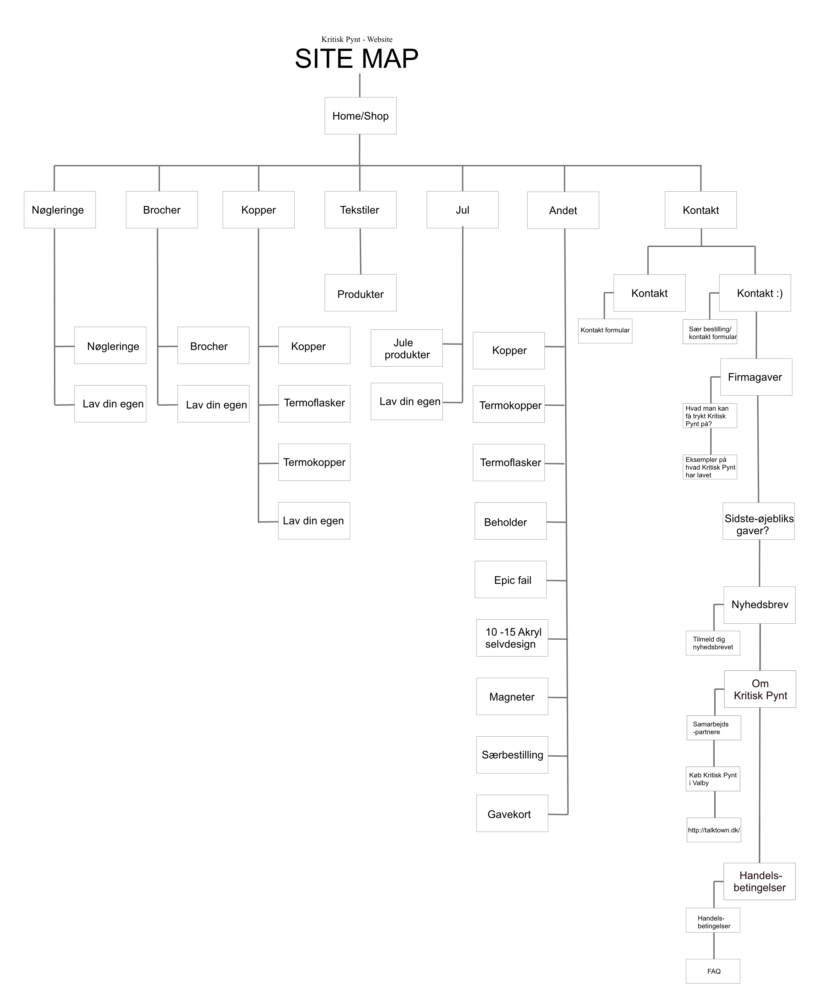

05
KRITISK PYNT
bert test
For at starte vores redesign proces igang fortog vi en BERT test for at kortlægge nogle design valg af den nuværende hjemmeside. BERT test får testpersonen til at tage stilling til et et spørgsmål ud fra den nuværende hjemmeside, med to modpoler som navigation. På den måde kan du tilrettelægge din BERT test efter de specifikke punkter man prøver at undersøge omkring hjemmesidens nuværende design og layout. Vi lavede også en survey med spørgsmål omkring siden, for at få svar på generelle ting om siden eksempelvis pris, koncept osv. Her var det tydeligt for os, at Kritisk Pynt ikke havde et tydeligt budskab. Folk var sikre nok i hvad hendes koncept gik ud på, hvilket er udfordring for de det produkt der sælges. Kritisk Pynt sælger sig selv på koncept og budskab, og derfor var det vigtigt for os at have fokus på at tydeligegøre dette i vores redesign. Som en del af en redesignsprocess kan med fordel anvende test som: lighthouse, heuristisk test, tænke-højt-test & 5 sek.
google analytics
Sara fra Kritisk Pynt gav os mulighed for at se hendes google analytics. Vi fik desværre dataen aftenen inden vores side skulle være færdig, og kunne derfor ikke benytte dem som ønsket. Men tallene viste os at de størstedelen af hendes kunder var kvinder, og at de fleste faktisk tilgik hendes hjemmeside på telefon, hvilket skyldes hendes primære platform som er er Instagram, hvor hendes brand startede. Det er relevante oplysninger for designet, da vi her med stor fordel kunne have lavet vores design til mobilen til at være godt funktionelt og indbydende for kunder af Kritisk Pynt.
interview
Vi tog beslutningen om at fortage et interview med Sara fra Kritik Pynt. Da jeg først snakkede med Sara fik jeg ret hurtigt indtryk af at Sara var en kvinde der brændte for at sprede politiske budskaber, og meninger, og mindre at skabe stor profit for hendes selv. Sara er en meget autentisk person, der elsker at fortælle hendes inspirende og utroligt spændende vej til at gå fuldtid på Kritisk Pynt til hvor hun er nu, med website og forretning i indre by. Interviwet er filmet hjemme hos Sara, i hendes værksted, hvor hun producere hver nøglering og broche. Vi har filmet med DJI OSMO pocket samt en lille røde mikrofon. Vi har brugt b-rolls, og skiftende vinkler.
sitemap
design process
moodboard

styletile

lightningdemo